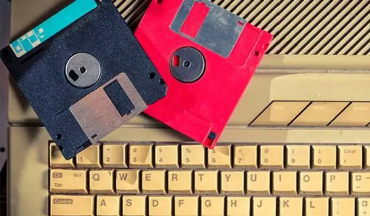

Douglas Engelbart, informático estadunidense, mostra um protótipo do computador moderno, que contava comum mouse e uma interface gráfica do usuário (GUI).
1969
Criação da primeira rede de computadores, ARPAnet (sigla para Advanced Research Projects Agency Network ou em português, Rede da Agência de Pesquisas em Projetos Avançados).
Essa rede de informações do Departamento de Defesa norte-americano interligava empresas e universidades e, posteriormente, deu origem à Internet.
1971
Alan Shugart e uma engenheiros da IBM inventam o “disquete”, primeira forma de compartilhamento de dados entre computadores.

1973
Robert Metcalfe e David Boggs criam a Ethernet, tecnologia que permitia a conexão entre vários computadores e outro hardware.